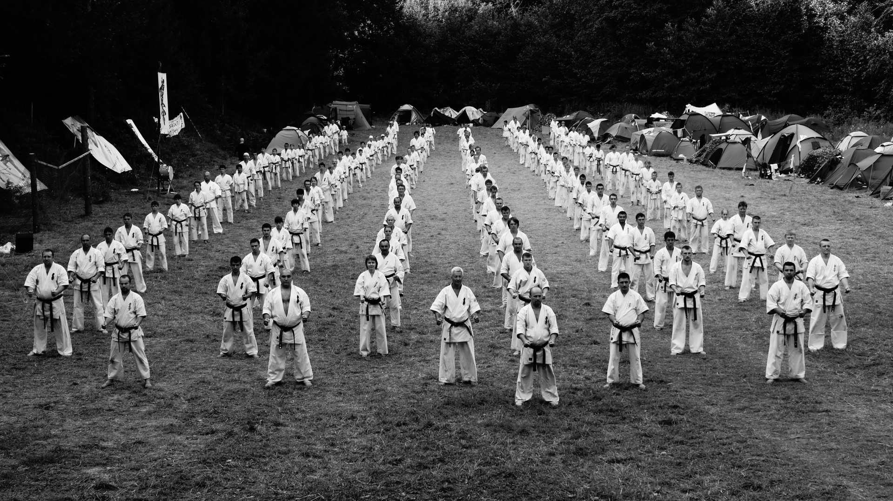

Каратэ
Каратэ – это не просто боевое искусство, это жизненный путь, в котором человек занимается укреплением своего тела и духа, расширяя пределы своих возможностей.
История возникновения каратэ
Самые ранние сведения об истории карате датируются 1761 годом. Эту дату упоминает Сесин Нагаминэ в своей книге, которая называется «Основы окинавского каратэ-до». Тогда это боевое искусство все знали как «тодэ», что в переводе с японского значит «китайский бокс».
Многие считают, что жители острова Окинава (в то время он был центром независимого королевства Рюкю) вели постоянную партизанскую борьбу против японских захватчиков и ради этой борьбы создали искусство карате. Но существуют и противники данной теории, они утверждают, что боевые искусства на острове практиковались, в основном, среди потомков переселенцев из Китая, и уже от них постепенно перешли к другим жителям.
